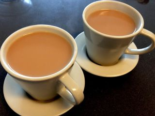

To prepare two cups of tea
- 2 tea spoon tea leaves
- 4 tea spoon sugar
- 1 cup milk
- 1 cup water
How to Prepare Tea?
- Heat the water in a vessel.
- Add the sugar and tea leaves and let it boil.
- Pour in the milk and bring it to a boil.
- Filter the tea into two cups.
Note: For additional flavor, you can add a small piece of ginger or cardamom.
